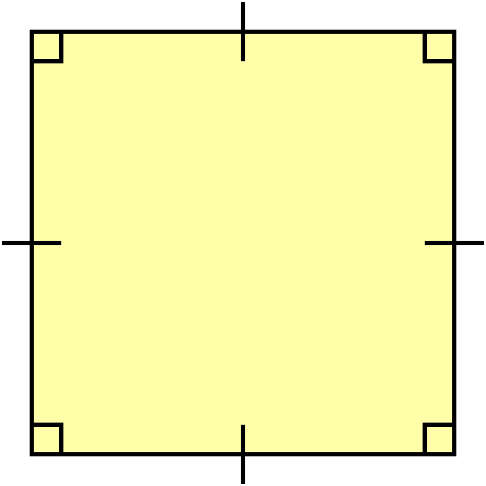

La representación gráfica de problemas a través de enfoques lógico-matemáticos es una herramienta fundamental para visualizar y analizar situaciones complejas de manera estructurada, donde se debe seguir algunas pautas para mejorar la resolución de problemas enfocándose en características conceptuales que desarrollan el método específicamente, partiendo desde la familiarización de problema en el cual se debe leer, observar y entender el enunciado del problema lo que permitirá obtener una idea clara, y se determinará los datos y la relación entre ellos, y a su vez la incógnita a encontrarse. (Pelaez y Aguirre, 2020, p. 43) En definitiva, al descomponer un problema lógico-matemático en sus componentes específicos facilita la identificación de patrones y relaciones, agilizando su resolución.
Habilidades lógico-matemático
Representación gráfica de problemas a través de problemas lógico-matemáticos.
Ejemplo
Problema:
El perímetro de un cuadrado es de 20 metros. ¿Cuál es la longitud de sus lados?
Solución:
- Paso 1. Identificar el perímetro de un cuadrado que es P=4L, donde L es el lado.|
- Paso 2. Entonces, 4L=20 metros.
- Paso 3. Se divide 20 metros para 4L que da como resultado L= 5 metros.
- Paso 4. Entonces el gráfico sería un cuadrado con lados de 5 metros cada uno.

Actividad práctica
Obra publicada con Licencia Creative Commons Reconocimiento No comercial Compartir igual 4.0